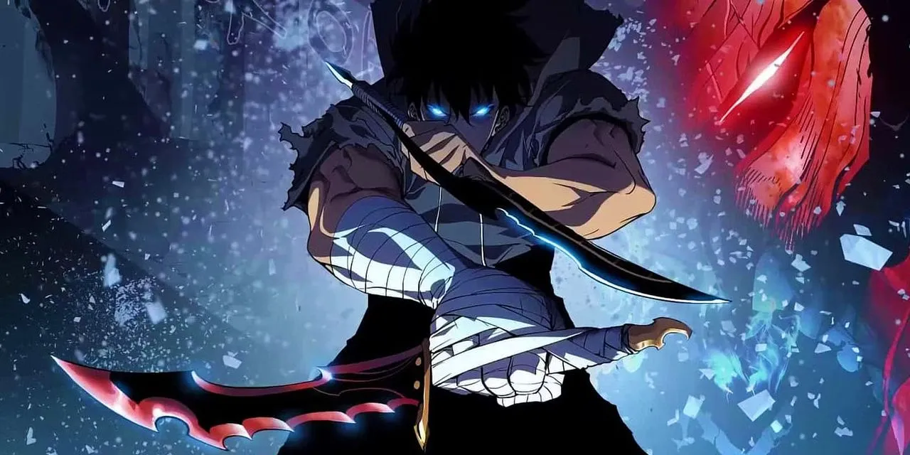

O anime
Para a produção do anime, optaram por um estúdio de renome, o A-1 Pictures, conhecido por obras como Kaguya-Sama: Love is War, Fairy Tail, The Seven Deadly Sins e Sword Art Online. Já para a direção, Shunsuke Nakashige foi o escolhido. Ele também trabalhou em SAO, anime que conta com diversos elementos de jogos de RPG, mas neste caso, os online.

A primeira temporada terá apenas 12 episódios, mas a tendência é que ele conte com novas temporadas em breve, especialmente pela boa recepção dos primeiros episódios.